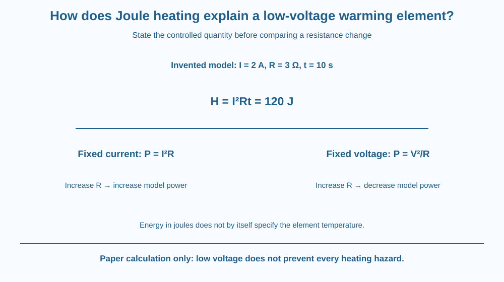

Calculate the thermal-energy transfer described by Joule's heating law in a simple resistive model. State which quantities remain fixed before comparing changes. Distinguish useful heating from an unsafe assumption that low voltage prevents every hot component or high-current hazard.
A resistive element can warm when current passes through it. Doubling current can produce more than twice the heating over the same time, yet doubling resistance does not have one universal effect unless the electrical conditions are specified.
Why do those comparisons differ? The heating law contains several connected quantities. Holding current fixed is not the same as holding voltage fixed.
The useful task is a clear energy calculation with conditions, not opening an appliance or attempting to make a wire glow.
For a simple resistive element with appropriate constant or averaged values, thermal energy transferred is H = I²Rt, where I is current, R resistance and t time. With amperes, ohms and seconds, the result is in joules.
The corresponding power is P = I²R. The square means that doubling current at fixed resistance produces four times the power. Over the same duration, the model heating energy is also four times as large.
For invented values of two amperes, three ohms and ten seconds, the calculation gives 2 squared multiplied by 3 multiplied by 10, or 120 joules. These are paper-model inputs, not a recommended circuit to build.
At fixed current and time, doubling resistance doubles the model heat transfer. But a fixed-voltage source changes the current when resistance changes. Using the simple relation I = V/R gives power P = V²/R for that comparison.
Therefore at the same voltage, a larger resistance can mean less power rather than more. The apparent contradiction disappears once the controlled quantity is stated. A comparison that silently changes the condition is not a test of the same relationship.
The temperature reached is not identical to the electrical energy input. The element also loses energy to its surroundings and has a finite heat capacity. Geometry, materials and cooling influence how hot it becomes.
Real resistance can change with temperature, and source behaviour can depart from the ideal constant-value model. A long heating interval may therefore require more careful treatment than one fixed R and I. State the assumption instead of promising exact real performance.
A low-voltage system can still supply enough current to heat components significantly. This lesson does not give a safe wiring threshold or a practical build procedure. All activities remain on paper, avoiding batteries, wall supplies and hot metal.
Draw an electrical-energy input arrow into a resistive element, then split outgoing energy between the intended thermal task and surroundings. Label stored internal energy separately if the element is warming.
Make two comparison cards. Card one fixes current; card two fixes voltage. Change resistance in both and use the appropriate expression rather than carrying one result into the other conditions.
Finally add a time bar. The energy accumulated depends on duration, while power describes the rate. This links the heating model to the earlier kWh lesson without repeating household wiring or the microscopic origin of resistance.
The SVG shows the equation I²Rt beside the invented 2 A, 3 Ω and 10 s example. A comparison strip states fixed-current and fixed-voltage conditions separately.
Energy arrows identify transfer into the element and loss to surroundings. The illustration does not equate joules directly with a particular temperature rise or claim that every device holds constant resistance.
No powered circuit or construction detail appears. The graphic is a quantitative model that helps explain a low-voltage warming element while leaving practical electrical design to suitable expertise and equipment instructions.

Electrical heating can be useful in designed equipment and unwanted in connectors or components. The same physical energy transfer can serve different roles depending on the intended function and construction.
In Indian classrooms, formula-based examples often look simple, but their conditions matter. A named resistance value does not describe the whole source, cooling system or safe operating arrangement.
Do not inspect sockets, improvise heaters, short a battery or connect a resistor to test the calculation. The paper example is sufficient and avoids turning a numerical lesson into an uncontrolled electrical or burn risk.
Use paper, a pencil and a calculator if desired.
Write paper model only beside both cases. Do not infer a resulting temperature without additional thermal information. The activity should show why conditions belong in a proportionality statement, not simply test whether a student can substitute numbers.
Why can two elements receive the same electrical energy yet reach different temperatures? Consider their heat capacities and losses rather than treating joules as a temperature unit.
Now imagine resistance rises as the element warms. What happens to the assumption of a constant R? A useful model identifies the interval and approximation within which its arithmetic represents the real process reasonably.
Which expression gives model Joule heating energy?
Answer: C — The resistive heating model multiplies squared current, resistance and duration.
Why must fixed current and fixed voltage be distinguished?
Answer: A — The source condition changes which quantities remain constant in the comparison.
Invented values are 2 A, 3 Ω and 10 s. What energy follows?
Answer: B — The calculation is 2² times 3 times 10, giving 120 joules.
Create a two-condition comparison sheet: fixed current and fixed voltage. State the appropriate power relation and predict the effect of increasing resistance in each.
Include the invented energy example and one thermal limitation. Your sheet must avoid practical wiring instructions and must not label low voltage as a universal guarantee that heating is harmless. The goal is a precise conditional calculation.
The same resistance change can appear to have opposite effects under different source conditions. Physics has not contradicted itself; the experiment being described has changed. Naming the controlled variable turns a memorised formula into a tool that can support the right prediction.
Joule heating follows I²Rt in the stated model; compare changes only after fixing current or voltage, and keep temperature response separate from electrical energy.